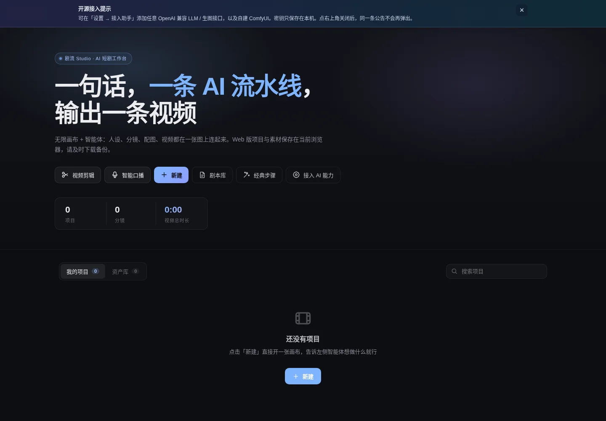

剧流 Studio：从云端到本地的 AI 漫剧实操
先做出一个有主角、有场景、有事件的短故事，再增加人物和场景，最后迁移到本地 ComfyUI。主线采用 DeepSeek + 阿里云百炼，面向 Ubuntu 浏览器版。
推荐打开离线网页版。软件基线为本仓库 0.1.16 的 fix/ubuntu-web-comfyui 分支，2026-10-21 修订。教程中的云端配置依赖本次新增的原生适配，不能只把模型名填进未修改的上游版本。
先完成这一条路线
安装与打开工作台 → 导入《忘带钥匙》 → 配置 DeepSeek / 百炼 → 生成角色与场景素材 → 生成第一镜单幅图片 → 生成 5 秒动态视频 → 补齐三镜 → 字幕与剪辑 → 导出 15 秒 MP4。
当前验收边界： 新故事包是制作输入，不含已经生成好的云端影片。协议测试使用模拟响应；真实云端出片、用户 Key 权限和浏览器跨域仍需现场验证。已有本地生图和短片导出记录见验证记录。
由易到难的四个故事
| 故事 | 目标 | 学会什么 | 项目 |
|---|---|---|---|
| 忘带钥匙 | 1 人、1 景、3 镜、15 秒 | 最小剧情与生成闭环 | 导入 JSON |
| 雨中的伞 | 2 人、1 景、5 镜、25 秒 | 角色区分、对白与反应 | 导入 JSON |
| 迟到的约定 | 2 人、2 景、8 镜、40 秒 | 场景切换、礼物交接、节奏 | 导入 JSON |
| 门后的来客 | 2 人、2 景、12 镜、60 秒 | 悬念、伏笔、揭晓与收束 | 导入 JSON |
这些都是目标成片时长。模型输出长度、剪辑入点和转场会影响最终时长；先用硬切，逐镜检查。
章节
| 章节 | 操作成果 |
|---|---|
| 00 工作流程 | 明确动态成片验收标准 |
| 01 Ubuntu 启动 | 打开工作台并加载 FFmpeg |
| 02 导入项目 | 导入带人物和场景的故事 |
| 03 DeepSeek + 百炼 | 配置接口，逐项测试 |
| 04 人物、场景与分镜 | 建立角色一致性和首帧素材 |
| 05 忘带钥匙 | 三镜头最小闭环 |
| 06 雨中的伞 | 双人同框与配音 |
| 07 迟到的约定 | 多场景与道具连续性 |
| 08 门后的来客 | 一分钟剧情制作 |
| 09 剪辑与导出 | 动态素材、字幕、音轨合成 |
| 10 迁移到本地 | 同一故事对照云端与本地 |
| 11 本地 Z-Image | 本地生图工作流 |
| 12 本地 H3 | 本地文生视频与图生视频边界 |
| 13 排障与备份 | 分阶段定位错误、保留证据 |
示例与记录
每个故事目录都有 story.md、cards.md、storyboard.csv、prompts.md、captions.srt 和 project.json。项目没有媒体、账号或密钥；导入后需要实际生成。
- 云端运行记录模板：按“未测试 / 通过 / 失败”填写，不用“已配置”代替“已出片”。
- 本地迁移对照表：保持剧本与分镜不变，只切换模型链路。
- 官方接口来源：模型名和地域以官方文档、账户可用列表为准。
- 旧玩具车练习、本地生图样例、3 秒静态导出样例：继续保留作环境诊断，不代表新漫剧已生成。

网页是离线教材，点击模型生成需要回到剧流工作台。完整云端视频请在你自己的设置页填好 Key 后逐镜测试。
第 00 章：从一个有事件的镜头开始
你将完成什么
《忘带钥匙》：小满回家发现钥匙不在口袋里，想起包里的备用钥匙，最后找到它。三镜头各 5 秒，横屏生活漫剧。
DeepSeek：故事 → 人物 / 场景卡 → 分镜与提示词
百炼千问：角色参考图 / 场景图 → 单幅分镜首帧
百炼万相：首帧 + 动作提示词 → 动态视频片段
百炼 TTS：台词 → 配音（第二轮加入）
剧流：保存与选片 → 时间线 → 字幕与声音 → FFmpeg → MP4
先导入教材的手写剧本和分镜，减少自动拆分带来的变化；随后用 DeepSeek 改写，比较人工分镜和模型分镜。使用导入项目只验证了下游制作；要验收 LLM 环节，还需实际生成一次剧本或分镜并检查结果。
分四道关验收
- 连接：一次真实短文本响应、一张可下载图片。页面“已保存”不等于接口可用。
- 单镜：一个 5 秒动态视频，画面有预期动作；可下载，刷新后仍可播放。
- 三镜：三个镜头主体、服装和道具保持一致；按剧情顺序剪辑。
- 成片：导出 MP4，使用外部播放器检查画面、时长、声音和字幕。
图片做成 MP4 是分镜预演；视频模型生成的动态片段才计入“动态生成通过”。有 MP4 后缀也要播放检查，模型请求成功还不代表片子讲得通。
实操
阅读剧本，不看字幕讲一遍故事。找出每镜的唯一主要动作。然后到第 01 章打开工作台，第一轮保持 16:9、5 秒镜头、简单机位，配音在视频链路通过后加入。
练习
把“备用钥匙”换成“忘记带伞”，仍只用一个人物、一个地点、三个镜头。写清困境、转折和结果，不增加长段旁白。
第 01 章：在 Ubuntu 启动剧流
本章目标
打开 http://127.0.0.1:5173，确认 Web 界面和剪辑核心可用。云端阶段不要求启动 ComfyUI。
1. 认识仓库位置
本机 references/AI-Short-Drama-Studio 是符号链接，真实 Git 仓库是：
cd /home/datamesh/github_waneta/AI-Short-Drama-Studio
git branch --show-current
本次修改分支为 fix/ubuntu-web-comfyui。代码和本书均放在这个独立仓库中。其它电脑使用自己的克隆目录，不要照搬上述绝对路径。
2. 首次安装
node --version
npm --version
# 本机已使用 Node 22；首次安装时跳过 Web 版不需要的 Electron 二进制。
ELECTRON_SKIP_BINARY_DOWNLOAD=1 npm ci
npm run setup:web
npm run web
本机本次已经完成依赖安装和核心准备，日常使用只需要 npm run web。如果提示端口占用，先打开现有页面；不要随意杀掉其它程序。
setup:web 从锁定版本的 @ffmpeg/core@0.12.10 复制 JS/WASM 到 src/assets/ffmpeg/。不会额外访问 CDN。本次上游下载脚本的 npmmirror 链接返回 404，因此推荐这个入口。
3. 打开网页
访问 http://127.0.0.1:5173。保持终端运行，按 Ctrl+C 停止。
- 这是 Ubuntu 浏览器版，本书没有制作 Linux 桌面安装包。
- Web 模式已跳过 Electron，不会为了显示网页启动桌面进程。
- 没有 LLM Key 也可以创建项目、配置本地 ComfyUI、剪辑本地素材。
- 固定使用同一个地址。
localhost:5173、127.0.0.1:5173、127.0.0.1:4173是不同的浏览器存储来源。
旧环境中的后台服务（可选）
此前环境曾把工作台托管为 juliu-studio-web.service。该服务不保证仍然存在；本次重做教程使用普通 Vite 进程启动 5173，未设置开机自启。页面已经可访问时，不要重复启动。
systemctl --user status juliu-studio-web.service
systemctl --user stop juliu-studio-web.service
# 同一次开机内，停止后可再次启动：
systemctl --user start juliu-studio-web.service
旧服务日志位于仓库 .cache/ubuntu-web.log。普通 Vite 进程日志在启动终端；退出或重启电脑后，用前面的 npm run web 启动即可。
4. 检查本机模型连接（本地阶段再做）
ComfyUI 在同一台机器的 127.0.0.1:8188 运行时：
curl --noproxy '*' -fsS http://127.0.0.1:5173/comfy-local/system_stats
预期返回系统与显卡的 JSON。浏览器通过剧流的固定目标代理访问 ComfyUI，无需开启 ComfyUI 的全来源 CORS，也无需把服务暴露到局域网。
如果你的 ComfyUI 改到了 8189：
COMFYUI_URL=http://127.0.0.1:8189 npm run web
同时在工作台填这个地址。变量只接受无路径、无账号信息的 HTTP(S) 地址，不要填 /prompt。
5. 检查剪辑核心与构建
进入“设置 → 系统”，找到 FFmpeg 的“现在加载”。预期提示就绪。
维护者检查命令：
npm run test:web
npm run build:web
npm run preview:web
构建预览地址是 http://127.0.0.1:4173，同样有代理与隔离响应头，但不会共享 5173 的浏览器项目。它是本机预览服务，不是生产部署方案。
验收与练习
- 打开首页而不是 Electron 报错窗口。
- 云端阶段可跳过 ComfyUI；进入本地阶段后再要求状态查询成功。
- 能解释为什么工作台 5173 和模型服务 8188 是两个端口。
下一章：第一个项目。
第 02 章：导入人物、场景和三镜头项目
导入《忘带钥匙》

- 下载项目 JSON。
- 在工作台进入设置 → 系统，点击“从文件导入”，选择 JSON。
- 返回首页，打开“忘带钥匙 · 漫剧练习”。从经典步骤进入分镜。
- 检查 3 个镜头：回到门前、想起备用、找到钥匙；每镜 5 秒。
- 检查人物“小满”和场景“家门外走廊”；它们已经与镜头绑定，参考图片尚未生成。
- 修改一个镜头的备注，刷新，再次打开项目，确认修改保留。
JSON 附有剧本、人物卡、场景卡、分镜、视频提示词和 SRT，时间线为空。生成素材后再重建时间线。它不会自动填写账号配置，也不会自动生成媒体。
自己写一个项目
先完成云端配置，再用 DeepSeek 将一句话扩写成完整短故事、拆成三镜。复制本例的结构，比较“一个镜头一个动作”是否做到了。第一次先使用教材 JSON，避免把 LLM 输出错误与视频接口错误混在一起。
保存与重复导入
项目与媒体在当前浏览器的 IndexedDB，配置在浏览器本地存储。换浏览器、无痕窗口、换访问端口，都可能看不到原来的项目。
同一个示例使用固定项目 ID，重复导入会更新原教材项目。保留自己的修改时先导出并备份原始媒体。设置页“导出所有项目”包含设置，可能带上 Key；分享前去掉 settings，只分享需要的项目。项目 JSON 不能代替媒体文件备份。
验收
三镜头、一个人物、一个场景全部出现；刷新后备注保留。随后进入DeepSeek + 百炼配置。
第 03 章：配置 DeepSeek 与阿里云百炼
本章目标与前提
完成一条文本响应、一张图片、一个动态视频和一句配音的独立检查，再运行三镜头项目。你已经有两家的 Key，分别填在自己的设置页面；不要写进教材、项目示例或截图。
下表以百炼北京地域为例。若 Key 来自新加坡等地域，地址必须切换为对应地域；不要把北京地址与海外 Key 混用。官方现有 DashScope 域名仍可用，业务空间专属域名请按自己的控制台填写。地域与接口说明
1. 按能力分别保存接入
| 设置模块 | API 来源 | Base URL（北京示例） | 本教程模型 |
|---|---|---|---|
| 语言模型 | DeepSeek | https://api.deepseek.com |
deepseek-flash |
| 生图 | 阿里云百炼 | https://dashscope.aliyuncs.com/api/v1 |
qwen-image-2.0 |
| 视频 | 阿里云百炼 | https://dashscope.aliyuncs.com/api/v1 |
wan2.6-i2v-flash |
| 配音 | 阿里云百炼 | https://dashscope.aliyuncs.com/api/v1 |
qwen3-tts-flash，先试 Cherry |
| 视觉（选修） | 阿里云百炼 | https://dashscope.aliyuncs.com/compatible-mode/v1 |
qwen3-vl-plus，以账户支持为准 |
以上是本教程选用的接口组合，不是对所有最新模型的推荐。模型开通状态、地域与额度需要在控制台确认；不硬编码价格。DeepSeek 当前文档列出 deepseek-flash；旧教程或旧设置里的名字可能不同，按实际可用名称选择。DeepSeek 官方文档
进入各设置模块，新建接入、选择 API 来源、填写地址与 Key、添加并选中模型名称。视频模块中的“模型 / 工作流名称”填 wan2.6-i2v-flash，将接入命名为“百炼 · 万相 2.6 首帧”。模型节点选择已配置的视频接入中的这个名字；“万相 3.0 Prime”是另一条旧代码路径，本教程不使用它。
百炼生图与视频使用原生协议，适配器保持“自动 / 默认”；不要改成自定义 HTTP 或 ComfyUI。原生生图使用 input.messages，视频使用异步任务；不能因为文本接口兼容 OpenAI，就把所有媒体接口都当成 /images/generations。
2. 先验证 DeepSeek
在剧本创作或助手中发送：
请写一个15秒二维生活漫剧：主角小满，家门外走廊，发现没带钥匙，最后找到包里的备用钥匙。
只要3个镜头，每个5秒，每镜一个主要动作。
依次写景别、开场静帧、动作、台词、环境声；不要新增角色或地点。
检查是否真的得到三镜、每镜能在 5 秒内表现。不要让“翻包、找到钥匙、开门、进屋”挤在一个镜头里。将真实返回与教材分镜比较，保存模型名和耗时。导入现成 JSON 的成功不能替代这个检查。
3. 百炼生图：先资产，后分镜
在“AI 配图”先生成小满的人物设计图和走廊场景图，再生成第一镜。项目已带文字卡，尚无图片；应用可能自动补齐缺失的人物/场景图，因此点击一个镜头也可能触发多次生图。首轮逐项操作，先看结果再继续。
qwen-image-2.0 用同一模型完成文生图和参考图编辑；每次最多保留三张参考图。两人物加一个场景已经是三张，不要再额外塞入看板。qwen-image-plus 仅用于纯文生图，不能直接承担有参考图的人物一致性步骤。千问文生图、图像编辑
选第一镜主图时检查：黄色外套、蓝包、蓝灰门、自然手部、一张完整画面。它将成为视频的首帧，不能是四宫格或角色四视图。
4. 百炼视频：单镜 5 秒
- 在“AI 视频”选择保存的“百炼 · 万相 2.6 首帧”。
- 使用第一镜的单幅配图；本路线不启用 H3 首尾帧链、数字人音频同步。
- 使用示例中的完整视频提示词，目标 5 秒、720P。
wan2.6-i2v-flash在本适配中关闭内生音频，后期单独配音。 - 提交后记录任务 ID；正常会经历排队、运行、下载。成功后播放并下载视频，刷新项目检查素材保留。
- 如果超时，先用保存的 task_id 查询或重试恢复查询；不要立刻重复提交新任务。
原生万相接入会提交首帧 img_url、轮询 /tasks/{id} 并下载结果。本教程适配限制为 5、10、15 秒，以减少学习变量；这不是所有万相模型能力的完整枚举。官方万相首帧接口
5. 配音最后加
先用字幕完成无对白版本，再配置 qwen3-tts-flash 与 Cherry，对一条短台词测试 TTS。听到自然语音后，再在镜头里选择 TTS 模式；人物卡的文字音色描述不等于已经配置了可用音色 ID。双人戏先逐句试听，再区分角色音色。
本分支会在缺 Key 时直接提示错误，不再把占位音当成真实配音。字幕与 TTS 是两项功能，不需要配音的镜头保持“无口播”。Qwen-TTS API
6. 浏览器连接问题
Web 版直接请求云端。现有 /comfy-local 代理只处理配置的 ComfyUI，并不代理 DeepSeek 或百炼。若开发者工具显示 CORS / Failed to fetch，先确认失败的是提交、轮询还是媒体下载；这是链路问题，改提示词不能解决。
遇到跨域阻断时，保留脱敏错误记录，使用经过配置的后端转发或受支持的运行方式再测试。不要把本教材写成“填 Key 必定能跑通”，也不要通过关闭浏览器安全机制来验收。本次未以真实 Key 验证当前环境的云端跨域行为。
本章验收
填写云端运行记录：文本响应、生图、视频提交、轮询、下载、刷新恢复、TTS 分开记录。至少一个动态镜头成功后，进入《忘带钥匙》补齐三镜。
第 04 章：人物、场景与动作连续性
本章目标
用《忘带钥匙》建立可复用的角色卡、场景卡和道具状态。文字描述确定意图，参考图片帮助生成保持一致；固定 seed 不能代替角色参考。
1. 锁定角色
小满：黑色齐肩短发、黄色连帽外套、白内搭、深蓝长裤、白帆布鞋、蓝色斜挎包。先生成并选定人物设计图，放大检查正脸、侧脸、服装和配色。重新生成角色图后，已有分镜不会自动变成新角色，需逐镜检查并决定是否重做。
2. 锁定场景
蓝灰入户门、门旁绿萝、米白墙、灰地砖、上午侧窗光。先建立空场景图，再把角色放进场景；不要每一镜重新发明门的颜色和绿萝的位置。
3. 静帧和视频分别写
| 项目 | 好的输入 | 容易出错的输入 |
|---|---|---|
| 静帧 | 手里已拿住钥匙，钥匙在包口附近 | 先翻包、然后找到钥匙、再开门 |
| 视频 | 把钥匙缓慢举到胸前，微笑，固定机位 | 同时开门、回头、奔跑、镜头环绕 |
| 跨镜 | 第二镜看向包，第三镜包口已有钥匙 | 钥匙突然出现在门锁上 |
打开逐镜提示词，先复制生图词生成单幅开始画面，再复制视频词。首帧是视频的视觉起点，不要把未来的多个动作压成一张拼图。
4. 人物和场景的引用
第一例：小满人设图 + 走廊场景图。第二例双人镜头：小满人设图 + 阿林人设图 + 公交站场景图。使用百炼千问参考图时保持最多三张，逐张注明身份。生成单人镜头时不要带入另一个人物的图片。
角色设计图可以是多角度图，场景卡可以是多视角图；传给万相 I2V 的必须是最终选定的单幅分镜图。本次适配会从当前镜头配图取首帧，不把排在最前的人设图当首帧。
练习与验收
给《雨中的伞》列出五镜道具表：蓝伞始终由阿林持有，蓝包始终属于小满。每生成一镜检查一次归属。人物脸型、衣服、道具交接或视线不对时，先修配图，再花时间生成视频。
第 05 章：《忘带钥匙》
本章成果
一人一景，建立事件与解决。完成 15 秒、3 个镜头的动态漫剧。首轮可先生成一个镜头检查接口；静态预演只用于检查剪辑，不能代替动态成片验收。
故事与资料
上午，小满回到家门口，手伸进外套口袋却摸了个空。她望着紧闭的门，突然想起蓝色斜挎包里的备用钥匙。她打开包的小袋，举起带橙色圆形挂件的钥匙，松了一口气。
按镜制作
| 镜头 | 秒数 | 画面与动作 | 台词/字幕 |
|---|---|---|---|
| 01 回到门前 | 0–5 | 小满站在门前，身体朝向门，右手停在外套口袋入口，中景。 右手探入口袋，停顿后低头看口袋；机位固定。 | 钥匙呢？ |
| 02 想起备用 | 5–10 | 小满侧脸近景，眉头微皱，蓝色斜挎包在胸前下方露出。 目光从门移向蓝色斜挎包，表情从疑惑变为恍然；机位固定。 | 等等，包里还有一把。 |
| 03 找到钥匙 | 10–15 | 小满手里已经捏着一把带橙色圆形挂件的银色钥匙，钥匙靠近包口，人物半身中近景。 把钥匙缓慢举到胸前，露出放松的笑容；不演开锁动作。 | 还好，留了备用。 |
- 按导入项目操作，打开“忘带钥匙 · 漫剧练习”。检查镜头数和人物卡；不要重复导入覆盖自己的修改。
- 阅读人物卡，把主角外貌和衣服固定下来。在“AI 配图”先生成第一镜，选定主版本，下载保存。后续配图使用同一角色参考图；百炼选择支持参考图的
qwen-image-2.0，每次最多三张，注明每张的用途。 - 在“AI 视频”选择你保存的“百炼 · 万相 2.6 首帧”接入，用当前镜头的单幅配图作为首帧。不要选人设四视图或六格看板做首帧；逐镜粘贴提供的视频提示词，5 秒、720P，先生成一段。
- 下载并播放该镜头，确认动作发生、人物没有突然变脸、没有多格画面。如果动作复杂，把开始状态改成“已经拿住物体”，只生成接下来的一小步。
- 逐镜补齐其余图片和视频。每次只改一个问题；文件名用
shot-01-image-v01.png、shot-01-video-v01.mp4，记录任务 ID、耗时和选片理由。 - 按剪辑与导出重建时间线，导入本例 SRT。字幕先行；需要对白时把对应镜头设为 TTS，先试听一句。此练习用后期配音，不把口型同步列为已完成能力。
- 检查每段实际素材时长。若生成长度与 5 秒不同，剪出目标片段，并以最终时间线调整 SRT，不能只按计划时长拼字幕。
针对本例的练习
将第二镜改成包口特写，其他提示词不变，对比是否更容易看懂“备用钥匙”的线索。
验收
- 人物数量、衣服、发型、关键道具符合素材卡，镜头之间有可理解的因果关系。
- 3 段都有真实视频素材；全部只有图片时，标记为“分镜预演”。
- MP4 可在浏览器之外播放；有字幕、没有片尾黑帧；配音版没有重复的人声轨。
- 保存项目 JSON、原始媒体、最终 MP4、SRT 和运行记录。本章附带制作输入，没有预生成的云端成片。
第 06 章：《雨中的伞》
本章成果
双人同框、反应镜头与短对白。完成 25 秒、5 个镜头的动态漫剧。首轮可先生成一个镜头检查接口；静态预演只用于检查剪辑，不能代替动态成片验收。
故事与资料
傍晚骤雨，小满抱着包站在雨棚边。阿林带着一把蓝色长柄伞走来，看见她的窘迫，停下脚步。他把伞举向两人之间，问她是否顺路。小满点头，两人一起走入雨中。
按镜制作
| 镜头 | 秒数 | 画面与动作 | 台词/字幕 |
|---|---|---|---|
| 01 被雨拦住 | 0–5 | 小满站在雨棚立柱旁，双手抱住蓝包，看着棚外雨幕，全景。 小满探出一只手接雨，随即收回；雨线连续落下。 | 雨怎么还不停。 |
| 02 来人停步 | 5–10 | 阿林撑着蓝色长柄伞，停在雨棚外缘，身体朝向小满所在立柱，中景。 阿林向立柱方向转头，脚步停下。 | 无 |
| 03 邀请同行 | 10–15 | 阿林与小满相对站在雨棚边，蓝伞在阿林手中，两人间保持一步距离，双人中景。 阿林将伞向两人中间倾斜，身体不换位；小满抬眼看他。 | 阿林：一起走？ |
| 04 回应邀请 | 15–20 | 小满近景，头顶边缘可见蓝伞，目光朝向阿林所在方向。 小满轻轻点头，微笑。 | 小满：谢谢。 |
| 05 走进雨里 | 20–25 | 两人并肩站在蓝伞下，背向镜头，雨棚仍在身后，全景。 两人并肩向前走两小步，阿林持伞，小满抱包，固定机位。 | 无 |
- 按导入项目操作，打开“雨中的伞 · 漫剧练习”。检查镜头数和人物卡；不要重复导入覆盖自己的修改。
- 阅读人物卡，把主角外貌和衣服固定下来。在“AI 配图”先生成第一镜，选定主版本，下载保存。后续配图使用同一角色参考图；百炼选择支持参考图的
qwen-image-2.0，每次最多三张，注明每张的用途。 - 在“AI 视频”选择你保存的“百炼 · 万相 2.6 首帧”接入，用当前镜头的单幅配图作为首帧。不要选人设四视图或六格看板做首帧；逐镜粘贴提供的视频提示词，5 秒、720P，先生成一段。
- 下载并播放该镜头，确认动作发生、人物没有突然变脸、没有多格画面。如果动作复杂，把开始状态改成“已经拿住物体”，只生成接下来的一小步。
- 逐镜补齐其余图片和视频。每次只改一个问题；文件名用
shot-01-image-v01.png、shot-01-video-v01.mp4，记录任务 ID、耗时和选片理由。 - 按剪辑与导出重建时间线，导入本例 SRT。字幕先行；需要对白时把对应镜头设为 TTS，先试听一句。此练习用后期配音，不把口型同步列为已完成能力。
- 检查每段实际素材时长。若生成长度与 5 秒不同，剪出目标片段，并以最终时间线调整 SRT，不能只按计划时长拼字幕。
针对本例的练习
先分别生成第三镜和第四镜，确认阿林持伞、小满抱包没有交换，再做其余镜头。
验收
- 人物数量、衣服、发型、关键道具符合素材卡，镜头之间有可理解的因果关系。
- 5 段都有真实视频素材；全部只有图片时，标记为“分镜预演”。
- MP4 可在浏览器之外播放；有字幕、没有片尾黑帧；配音版没有重复的人声轨。
- 保存项目 JSON、原始媒体、最终 MP4、SRT 和运行记录。本章附带制作输入，没有预生成的云端成片。
第 07 章：《迟到的约定》
本章成果
两场景连续性、道具与情绪递进。完成 40 秒、8 个镜头的动态漫剧。首轮可先生成一个镜头检查接口；静态预演只用于检查剪辑，不能代替动态成片验收。
故事与资料
小满整理书桌时看到约定提醒，才意识到自己迟了。她抓起给阿林准备的小礼物，匆忙出门。车站入口，阿林正等在长椅边。小满赶到，把礼物递给他，低声道歉。阿林笑着接过，两人的紧张化成轻松。
按镜制作
| 镜头 | 秒数 | 画面与动作 | 台词/字幕 |
|---|---|---|---|
| 01 发现提醒 | 0–5 | 小满坐在书桌旁，桌上手机亮着纯色屏幕，身旁放着红色丝带礼物盒，中景。 小满低头看手机后睁大眼睛；屏幕不生成文字。 | 约定时间，已经过了。 |
| 02 拿起礼物 | 5–10 | 书桌近景，小满的手已扶在红色丝带礼物盒两侧。 双手缓慢拿起礼物盒，不改变丝带颜色。 | 无 |
| 03 准备出发 | 10–15 | 小满站在卧室门边，蓝包斜挎，怀里抱着红丝带礼物盒，中景。 小满抱紧礼物，迈出一步离开卧室。 | 得快一点。 |
| 04 有人等待 | 15–20 | 阿林站在车站入口长椅旁，双手自然垂下，望向入口通道，全景。 阿林看向通道，轻轻调整站姿。 | 无 |
| 05 终于赶到 | 20–25 | 小满在同一长椅附近，怀抱红丝带礼物盒，额前碎发略乱，中景。 小满停步，轻轻喘气后抬头。 | 小满：对不起，我来晚了。 |
| 06 递出心意 | 25–30 | 两人面对面站在长椅旁，小满双手捧着礼物盒，阿林双手伸到盒子下方，双人中景。 小满将盒子向前递一点，阿林托住，动作缓慢。 | 无 |
| 07 接受道歉 | 30–35 | 阿林近景，红丝带礼物盒已在他手中，视线朝向小满。 阿林露出笑容，轻轻点头。 | 阿林：来了就好。 |
| 08 一起出发 | 35–40 | 两人并肩站在车站入口，阿林拿着礼物盒，小满背蓝包，暖色逆光，全景。 两人并肩向入口走两步。 | 无 |
- 按导入项目操作，打开“迟到的约定 · 漫剧练习”。检查镜头数和人物卡；不要重复导入覆盖自己的修改。
- 阅读人物卡，把主角外貌和衣服固定下来。在“AI 配图”先生成第一镜，选定主版本，下载保存。后续配图使用同一角色参考图；百炼选择支持参考图的
qwen-image-2.0，每次最多三张，注明每张的用途。 - 在“AI 视频”选择你保存的“百炼 · 万相 2.6 首帧”接入，用当前镜头的单幅配图作为首帧。不要选人设四视图或六格看板做首帧；逐镜粘贴提供的视频提示词，5 秒、720P，先生成一段。
- 下载并播放该镜头，确认动作发生、人物没有突然变脸、没有多格画面。如果动作复杂，把开始状态改成“已经拿住物体”，只生成接下来的一小步。
- 逐镜补齐其余图片和视频。每次只改一个问题；文件名用
shot-01-image-v01.png、shot-01-video-v01.mp4，记录任务 ID、耗时和选片理由。 - 按剪辑与导出重建时间线，导入本例 SRT。字幕先行；需要对白时把对应镜头设为 TTS，先试听一句。此练习用后期配音，不把口型同步列为已完成能力。
- 检查每段实际素材时长。若生成长度与 5 秒不同，剪出目标片段，并以最终时间线调整 SRT，不能只按计划时长拼字幕。
针对本例的练习
把第四镜放到第一镜之前，对比悬念变化；重排后重新生成字幕时间轴。
验收
- 人物数量、衣服、发型、关键道具符合素材卡，镜头之间有可理解的因果关系。
- 8 段都有真实视频素材；全部只有图片时，标记为“分镜预演”。
- MP4 可在浏览器之外播放；有字幕、没有片尾黑帧；配音版没有重复的人声轨。
- 保存项目 JSON、原始媒体、最终 MP4、SRT 和运行记录。本章附带制作输入，没有预生成的云端成片。
第 08 章：《门后的来客》
本章成果
一分钟起承转合、悬念与揭晓。完成 60 秒、12 个镜头的动态漫剧。首轮可先生成一个镜头检查接口；静态预演只用于检查剪辑，不能代替动态成片验收。
故事与资料
夜里，小满独自在客厅画画，忽然听见敲门声。她以为快递早已送完，走到门边问是谁。门外的人没有立刻回答，只传来纸袋窸窣声。小满犹豫后开门，发现妈妈拎着她爱吃的点心站在门外。妈妈说路过就来看看，她笑着把妈妈迎进屋。
按镜制作
| 镜头 | 秒数 | 画面与动作 | 台词/字幕 |
|---|---|---|---|
| 01 安静夜晚 | 0–5 | 小满坐在茶几前画画，画纸上只有简单线条，台灯照亮脸部，全景。 小满低头缓慢画一笔。 | 无 |
| 02 敲门响起 | 5–10 | 小满中近景，手中的笔悬在纸面上方，入户门在虚焦背景中。 听见两下敲门，小满抬头。 | 无 |
| 03 望向门口 | 10–15 | 小满侧脸近景，视线朝向蓝灰入户门，眉头微皱。 小满缓慢转头看门。 | 这么晚，会是谁？ |
| 04 走到门边 | 15–20 | 小满已站在入户门前一步处，中景，门仍关着。 小满向门靠近半步，停下。 | 无 |
| 05 隔门询问 | 20–25 | 小满站在关闭的门旁，侧脸朝门，近景。 小满微微侧头倾听，身体保持不动。 | 小满：谁呀？ |
| 06 纸袋线索 | 25–30 | 门外手部特写，米色针织袖口，手里提着牛皮纸袋，不出现脸。 手指轻轻调整纸袋提绳。 | 无 |
| 07 犹豫片刻 | 30–35 | 小满近景，手已搭在门把手上，表情迟疑。 她停顿一下，轻轻吸气。 | 无 |
| 08 开门一线 | 35–40 | 门已开一条窄缝，小满站在门内，门外人物未入画，中景。 小满把门缓慢再推开一点，光线沿地面变宽。 | 无 |
| 09 妈妈来了 | 40–45 | 妈妈站在打开的门外，手提牛皮纸袋，米色开衫清晰，正面中景。 妈妈微笑，轻轻举起纸袋。 | 妈妈：路过，给你带点吃的。 |
| 10 放松下来 | 45–50 | 小满近景，门已打开，脸上受暖光照亮。 小满露出笑容，肩膀放松。 | 小满：快进来。 |
| 11 迎进屋里 | 50–55 | 妈妈站在门内，小满在她身旁让出通路，妈妈仍提纸袋，双人中景。 妈妈向室内迈一步，小满侧身让路。 | 无 |
| 12 分享点心 | 55–60 | 两人坐在茶几两侧，牛皮纸袋放在桌上，盘中放几块点心，温暖全景。 妈妈把盘子轻轻推向小满，两人相视而笑。 | 原来，惊喜也会敲门。 |
- 按导入项目操作，打开“门后的来客 · 漫剧练习”。检查镜头数和人物卡；不要重复导入覆盖自己的修改。
- 阅读人物卡，把主角外貌和衣服固定下来。在“AI 配图”先生成第一镜，选定主版本，下载保存。后续配图使用同一角色参考图；百炼选择支持参考图的
qwen-image-2.0，每次最多三张，注明每张的用途。 - 在“AI 视频”选择你保存的“百炼 · 万相 2.6 首帧”接入，用当前镜头的单幅配图作为首帧。不要选人设四视图或六格看板做首帧；逐镜粘贴提供的视频提示词，5 秒、720P，先生成一段。
- 下载并播放该镜头，确认动作发生、人物没有突然变脸、没有多格画面。如果动作复杂，把开始状态改成“已经拿住物体”，只生成接下来的一小步。
- 逐镜补齐其余图片和视频。每次只改一个问题；文件名用
shot-01-image-v01.png、shot-01-video-v01.mp4，记录任务 ID、耗时和选片理由。 - 按剪辑与导出重建时间线，导入本例 SRT。字幕先行；需要对白时把对应镜头设为 TTS，先试听一句。此练习用后期配音，不把口型同步列为已完成能力。
- 检查每段实际素材时长。若生成长度与 5 秒不同，剪出目标片段，并以最终时间线调整 SRT，不能只按计划时长拼字幕。
针对本例的练习
先完成 1、2、9、12 四个关键镜，确认画风后再补中间镜头；不要一次批量生成十二段。
验收
- 人物数量、衣服、发型、关键道具符合素材卡，镜头之间有可理解的因果关系。
- 12 段都有真实视频素材；全部只有图片时，标记为“分镜预演”。
- MP4 可在浏览器之外播放；有字幕、没有片尾黑帧；配音版没有重复的人声轨。
- 保存项目 JSON、原始媒体、最终 MP4、SRT 和运行记录。本章附带制作输入，没有预生成的云端成片。
第 09 章：剪辑、字幕、声音与最终 MP4
本章目标
将《忘带钥匙》的三个动态镜头剪成约 15 秒成片。先使用硬切，片段各 5 秒，再加入字幕与声音。
1. 先检查素材，再排时间线
- 在“AI 视频”逐镜播放，确认有预期动作；下载三个 MP4 到本地备份。
- 进入“视频剪辑”，点击“重建时间线”。确认三段顺序是回到门前、想起备用、找到钥匙。
- 检查每段引用的是视频。缺视频时应用可能使用图片，导出成功也仍是预演，不能记作动态全流程成功。
- 将各段入点设为有效画面起点，时长不超过可用素材。总长先按 15 秒核对；关掉复杂转场，速度先保持 1 倍。
先用播放器观察片段末尾是否有冻结、黑帧或主体消失。模型返回的时长不一定与计划完全相等，必要时缩短片段并调整字幕。
2. 加字幕
进入“字幕”，在 SRT 区点击“导入”，选择对应故事的 captions.srt。例如忘带钥匙字幕。字体选择本机可用的中文字体；先用底部白字、黑色描边和半透明底。
导入 SRT 后，以最终时间线逐条校对。如果剪掉了半秒，后面的字幕也要相应前移；“从分镜同步字幕”会重新生成时间码，可能覆盖手工调整。
3. 加声音
无对白第一版只用字幕。第二版在需要说话的镜头中选择 TTS，按云端配音配置生成并试听。每镜 5 秒的台词应足够短；声音太长时缩短台词或延长镜头，不要把尾字截掉。
wan2.6-i2v-flash 教程接入输出无声视频，环境声和对白需要后期补入。若换用带音频的模型，检查原声是否已经有人声，避免和 TTS 叠成两条对白。没有音乐素材时可以不加音乐，先把故事讲明白。
4. 导出与外部验收
- 进入“导出”，确认不是空时间线；分辨率先用 1280×720，24 fps，开启烧录字幕。
- 点击导出并等待编码，下载 MP4。
- 用系统播放器打开，检查第一帧、每个切点和最后一帧，确认三个镜头都在。
- 对照人物卡检查角色，试听对白完整性，观察字幕是否盖住钥匙或人物脸。
- 使用 FFprobe 检查文件结构：
ffprobe -v error -show_entries format=duration:stream=codec_type,codec_name,width,height,r_frame_rate -of json your-film.mp4
元数据可以确认轨道与编码，不能判断故事是否流畅，也不能单独证明画面是动态生成的。后者需要逐镜播放与生成记录共同验收。
只有图片时的练习
使用旧 3 秒静态视频也能练习导入、字幕和导出。这只验证剪辑模块，不算云端视频模型通过。正式记录中请分开填写“静态预演”和“动态成片”。
交付清单
保存项目 JSON、所有原始 PNG/MP4/音频、最终 MP4、实际使用的 SRT、分镜表和运行记录。项目导出可能包含配置，分享前清理 Key。三镜动态片通过后，继续双人故事；四例完成后进入本地迁移。
第 10 章：用同一个故事迁移到本地 ComfyUI
本章目标
保持《忘带钥匙》的剧本、镜头顺序、画幅与目标时长不变，把云端图片和视频生成换成本地模型。先确认云端最小成片已通过，否则两个环境的问题很难区分。
1. 保存云端基准
下载云端三镜视频与最终 MP4，导出项目。复制项目 JSON 文件，把项目 id 改为新的值、名称加“本地对照”，再导入；原镜头引用只在同一浏览器存在，换环境需要重新导入媒体。不要重新导入同 ID 覆盖云端作品。
使用对照表记录每镜提示词、模型、工作流、seed、耗时、画面一致性和输出文件。DeepSeek 仍可用于写作，不必同时替换所有能力。
2. 先只替换生图
按Z-Image 接入配置本地生图，生成《忘带钥匙》第一镜。现有 Z-Image 模板是纯文生图，不接角色参考图片，因此不能把百炼参考图编辑步骤原样照搬。
本地初测在独立生图节点使用同一生图提示词，或直接运行 API 模板，再把结果导入资源库选作分镜图。想实现“同一角色的参考图编辑”，需要额外安装并验证支持该能力的模型和工作流，纯文生图模板不具备此能力。
3. 再替换生视频
按H3 接入切换服务。已有模板是文生视频：没有连首帧，因此可以验证视频队列、推理、下载与播放，但不能验收“首帧保持人物一致”。使用独立视频节点和同一动作提示词做一个短镜头，完成后把结果导入对应分镜。
要做严格的图生视频，工作流必须在 ComfyUI 本身先成功：
- 有模型真正使用的图像加载节点，首帧连入模型；先在 ComfyUI 内生成一次。
- 导出 API 格式工作流，确认输出节点保存 MP4。
- 在剧流导入模板，将 image 角色映射到图像输入，使用上传模式；提示词和 seed 另行映射。
- 生成时确认图片上传成功、工作流使用上传后的文件名、回收结果确实是视频。
- 输入一张有明显色块或姿态的首帧，检查视频开始画面是否保留这些特征，不能仅看请求成功。
4. 规格和资源
当前 H3 模板固定 864×480、124 帧、24 fps，约 5.17 秒。工作台的 5 秒不能直接写入 length=5；本模板只替换提示词和 seed，规格保持模板值，成片时再剪到目标时长。
单张 24 GB GPU 按“先批量生图，再切换生视频”操作。切换之前检查运行与等待队列都为空，按本地章节的服务命令操作。不要为了云端测试提前占用本地 GPU。
验收分级
| 层级 | 需要的证据 |
|---|---|
| 本地图片 | PNG 可读取，提示词生效，刷新后保留 |
| 本地文生视频 | 实际 MP4、可见动作、耗时和任务 ID |
| 本地图生视频 | 除 MP4 外，证明首帧上传、节点映射与画面约束生效 |
| 本地完整短剧 | 三个动态镜头重新导出、人物与场景连续性检查 |
本次教程更新没有重跑 H3 推理，不能把模板字段检查算作视频生成通过。每完成一级，再更新自己的对照表。
第 11 章：接入 Z-Image，生成第一张分镜图
本章目标
让剧流通过本地 ComfyUI 真正生成一张图片，并知道如何核对输入是否生效。
1. 启动已有模型服务
本机已经安装 Z-Image-Turbo。工作流需要三个文件：
| 文件 | ComfyUI 目录 |
|---|---|
| z_image_turbo_bf16.safetensors | models/diffusion_models |
| qwen_3_4b.safetensors | models/text_encoders |
| ae.safetensors | models/vae |
它们不在 CheckpointLoaderSimple 中加载，也不是安装工作台时自动下载的。
若服务尚未运行，在 ai-video-pipeline 仓库执行：
bash docs/comfyui_tutorial/examples/start_z_image_turbo.sh
若 8188 已有其它实例，先检查队列，再按原 ComfyUI 教程切换服务，不能同时启动两个实例抢占端口。
2. 添加本地接入
- 打开 设置 → 图像生成。
- 在“本地 ComfyUI”填
http://127.0.0.1:8188。 - API Key 留空；只勾选“添加生图接入”，首次暂不加视频。
- 点“添加并设为当前”，确认连通成功。
- 在当前接入底部的“高级接口兼容”点“展开”，在适配器中使用“自建 ComfyUI（/prompt）”。
- 找到“Comfy 工作流模板”，导入 z-image-api.json，或粘贴全文后点“校验并保存”。
没有语言模型时程序会使用规则兜底。为保证实验一致，打开“手动编辑映射 JSON”，粘贴 z-image-input-map.json，点“保存映射”，最后保存设置。
3. 读懂映射
| 角色 | 节点与字段 | 意义 |
|---|---|---|
| prompt | 4.text | 工作台输入的画面描述 |
| seed | 8.seed | 调用方提供时写入随机种子 |
教材映射故意不接宽高、步数：工作流固定为 1024×1024、8 步、CFG 1、batch 1，方便复用已验证的小配方。工作台的画幅选择不会改变这个模板的实际输出尺寸。
不要把 qwen_3_4b 当作聊天服务；它在这里仅用于生图文本编码。
4. 生成和下载
- 打开教材项目的 AI 配图页。
- 进入分镜配图区域，选第一个镜头，填写：
窗边的木质书桌上，一辆红色金属玩具汽车，四个轮子结构自然。
近景，三分之四侧面，上午自然光从左侧照入，木纹细腻，背景简洁。
温暖的电影画面，无文字。
- 点该镜头的“生成图片”，等待完成。先不要使用批量生成。
- 在“资源库”下载 PNG。可与 本次实测图片比较。
- 修改一个变量，例如“上午自然光”改成“傍晚暖光”，再次生成，记录区别。
当前模板是纯文生图，不接参考图。不要误以为把人设图放进界面就一定传给了模型。对参考图一致性的练习，需另外接入支持图像输入的模型和工作流。
验收与练习
- 得到真实 PNG，尺寸 1024×1024，ComfyUI 历史中有对应任务。
- 修改提示词后画面有合理变化；失败时先看输入映射和 ComfyUI 报错。
- 记录提示词、模型、种子、尺寸、耗时、选片原因。
下一章：本地 H3。
第 12 章：H3 视频生成选修
本章目标
了解如何接入已有 H3 文生视频工作流。先做一个短镜头，不直接挑战长片、口型和多角色一致性。
1. 明确本例边界
教材 h3-t2v-api.json来自本机已有的 H3 验证工作流：864×480、124 帧、24 fps、20 步，约 5.17 秒，带音频输出。
虽然内部节点叫 MiniMaxH3ImageToVideo，本模板没有连接首帧图像，因此实际是文生视频。把一张图放在工作台上，不会自动让它变成图生视频。
底层 H3 配方有历史验证记录。本次 Ubuntu 工作台验收重点是 Z-Image 与浏览器剪辑，没有重新执行 H3 推理；下述接入属于选修待练习项。
2. 切换本机服务
确认 ComfyUI 队列为空：
curl --noproxy '*' -fsS http://127.0.0.1:8188/queue
只有运行和等待队列均为空时，在本机 ai-video-pipeline 仓库执行：
systemctl --user stop z-image-turbo.service
bash references/minimax-h3/start.sh
不要同时加载两套大模型。这个步骤使用你现有的 H3 启动配置，不是在剧流中安装 H3。
3. 添加独立视频接入
- 进入“设置 → 视频”，在本地 ComfyUI 区域只勾选视频。
- 地址仍为
http://127.0.0.1:8188，Key 留空。 - 在当前视频接入选择
comfyui-prompt，导入 视频工作流。 - 粘贴 h3-t2v-input-map.json到手动映射并保存。
- 映射只接
5.prompt和7.noise_seed，其余参数固定在模板中。
不要把工作台的“时长（秒）”直接映射到 5.length。 这里的 length 是帧数，填 5 不代表 5 秒。尺寸与 fps 也固定，避免工作台选项与模型限制混用。
4. 生成一个镜头
在视频生成节点或经典视频页使用该接入。先使用这个简单描述：
A small red toy car rolls slowly across a wooden desk beside a sunlit window.
The camera stays still. Soft daylight, natural shadows, quiet room ambience.
No text, no subtitles, no people.
生成后检查：画面是否连续、车轮是否变形、背景是否漂移、音频是否有异常。进入资源库下载 MP4；本分支按输出类型优先取视频；如果报没有视频输出，检查保存视频节点是否连接并完成。
本例不保证与 Z-Image 分镜图里的车完全一致。严格图生视频应另外建立并验证首帧上传、节点映射与模型输入链路。
5. 切回生图
再次检查队列为空，再执行：
systemctl --user stop minimax-h3.service
bash docs/comfyui_tutorial/examples/start_z_image_turbo.sh
验收与练习
得到一个可播放的短 MP4，记录实际时长和耗时。只改变“静止机位”为“缓慢推进”做第二次对照；不要同时提高分辨率和帧数。
第 13 章：备份、排障与继续学习
本章目标
交付一个他人能理解、自己能重做的实验包。
1. 保存实验包
window-trip/
story.md
storyboard.csv
project.json
workflows/
images/
videos/
window-trip.srt
final.mp4
notes.md
“资源库 → 导出项目 JSON”保存项目结构；“设置 → 系统 → 导出所有项目”还会带设置，可能包含 API Key。项目 JSON 不包含媒体二进制，导入功能也不是完整的素材与配置恢复工具。 请逐个下载重要素材，另存提示词和工作流。分享前不要带自己的 Key。
首次备份后，用一个新测试项目导入 JSON，再从资源库重新绑定素材，确认自己会恢复，而不是等浏览器数据丢失后才尝试。
2. 按症状排查
| 症状 | 首先检查 | 处理 |
|---|---|---|
| Web 启动还在下载 Electron | 当前分支与命令 | 使用本分支 npm run web，不是 npm run dev |
| 找不到 ffmpeg-core.esm.js | 是否执行 setup | npm ci 后运行 npm run setup:web |
| ComfyUI 代理 502 | 8188 是否启动 | 先访问 ComfyUI，再检查 COMFYUI_URL |
| 连通但不能生成 | workflowTemplate 与输入映射 | 使用 API 格式 JSON，检查模型文件名 |
| 改提示词结果不变 | 映射是否接到正确字段 | Z-Image 是 4.text；H3 是 5.prompt |
| 图片尺寸与界面不符 | 教材工作流的固定参数 | 本例固定 1024×1024；若需改尺寸，单独修改并验证 |
| H3 几秒视频却报错 | length 是否误填秒数 | 本例固定 124 帧，不映射秒数 |
| 显存或内存不足 | 模型服务配置、队列、并发 | 图片/视频分阶段；一次一个任务；沿用已验证启动配置 |
| FFmpeg 隔离环境不可用 | 页面地址与响应头 | 通过本机 Vite 地址访问，不能直接打开应用 dist/index.html |
| 项目突然消失 | 浏览器、地址、端口是否变化 | 回到原来的 127.0.0.1:5173；从备份恢复 |
| 云端模型 Failed to fetch | 服务商 CORS 与网络 | 本地 ComfyUI 代理不等于通用云 API 代理 |
| 画布有参考图但不保持主体 | 工作流是否实际接图 | 纯文生图不能靠界面关联变成图像编辑 |
3. 记录问题时带上什么
记录所在章节、页面地址、当前分支、模型接入名、报错原文和 ComfyUI 任务状态。不要把真实 Key 放进日志截图或示例 JSON。
4. 下一步升级顺序
先完善分镜与素材管理，再验证图生视频；之后才考虑参考图编辑、角色一致性、多镜头续接、配音、口型、超分和 Turbo。每增加一个能力，都先单独跑通一个镜头。
验收
最终能交付：一份三镜头表、素材文件、可播放 MP4、工作流与参数记录。能够说明哪些镜头是图片预演，哪些是真正生成的动态视频。
云端阶段定位表
| 现象 | 优先检查 |
|---|---|
| 401/403 | Key 所属地域、模型权限、选中的接入，勿先改提示词 |
| 404 | 模型名、原生/兼容接口地址是否混用，是否使用本次修改后的分支 |
| 400 | 首帧格式、尺寸、时长；千问 plus 不能做参考图编辑 |
| CORS / Failed to fetch | 分清提交、轮询、结果下载；本机 ComfyUI 代理不代理云端 |
| 有任务 ID 但没有视频 | 查原任务状态、错误码和下载链路，不立即重复付费提交 |
| 视频开头是人物四视图 | 选择了错误参考图；万相首帧必须是单幅分镜图 |
| 导出正常但没有动作 | 时间线可能引用图片；检查每镜实际视频素材 |
| 配音报缺少 Key | 填写配音模块自己的 Key，不会自动继承视频配置 |
先用运行记录保留脱敏证据，再定位代码或配置。单测和构建通过不是“仓库没有 bug”的证明。
验证记录：教程重做与媒体链路修正
更新日期：2026-10-21。剧流 0.1.16，fix/ubuntu-web-comfyui 工作区；保留此前已有修改，未创建提交。
本次完成
| 检查 | 实际结果 |
|---|---|
| 教程 | 14 章、4 套故事、28 个镜头；均有剧本、角色/场景卡、提示词、分镜 CSV、SRT、可导入 JSON |
| 四个项目 UI 导入 | 通过设置页文件选择器导入，镜头数 3 / 5 / 8 / 12，人物与场景均存在 |
| 网页布局 | 1440 / 390 / 320 px 无页面水平溢出；本地文件离线打开通过 |
| 原生百炼协议 | 模拟响应测试：千问文生图/参考图、万相提交/轮询/恢复/失败/取消、下载；不调用模型 |
| 配音 | 模拟测试：Qwen3-TTS 直接走原生 multimodal 接口，缺 Key 报错 |
| ComfyUI 输出 | 模拟预览 PNG + MP4 混合结果，正确选择 MP4；只有图片时报告缺少视频 |
| 浏览器串联 | 真实分镜执行模块 + 模拟云端 HTTP：三镜保存、任务 ID 清理、刷新恢复通过 |
| 单幅首帧 | 百炼路线不再附加四宫格提示；分镜执行模块以该镜配图作为首帧 |
| 浏览器导出 | 三段合成并烧录中文字幕，约 15.07 秒，640×360、24 fps、H.264/AAC |
| Web 回归与构建 | 实际仓库 npm run build:web 的源码检查、类型检查、编译、产物检查及已有代理回归全部通过 |
| 文档静态检查 | 100 个 Markdown 本地链接、117 个 HTML 本地链接/锚点、章节清单、项目关联、CSV/SRT/JSON 检查通过 |
导出测试素材由 FFmpeg testsrc2 生成，是彩色测试画面，不是 AI 漫剧，也没有充当故事成片发布。浏览器使用独立无头上下文、临时测试接入和假 Key，不修改用户日常浏览器配置。
机器记录：validation.json。旧本地实测：历史验证记录、历史机器记录。旧记录里的 Z-Image 真实 PNG、3 秒静态 MP4 继续保留，不能当成本次云端生成结果。
发现并修正的问题
- 百炼生图预设落入通用 Images API，没有按千问原生请求/响应处理；新增本教程的千问原生适配。
- 百炼视频预设缺少原生分流；新增万相 2.6 首帧/文生视频提交、查询、下载，使用选中视频接入的 Key。
- 配图拼接四宫格指令、视频收集器优先打包人设等参考，均不适合万相单幅首帧；给百炼路线增加独立首帧路径。
- Qwen3-TTS 先尝试另一条接口且缺 Key 时产生占位音；改为直接调用对应原生接口，缺 Key 明确失败。
- ComfyUI 同时保存图片与视频时可能返回第一个预览图；改为按请求类型选取输出，并允许原生 Comfy 文生视频进入适配器。
尚未验收
- 尚未使用用户的 DeepSeek 或百炼 Key：真实账号权限、额度、地域、云端 CORS、真实模型的成片质量没有验收。
- 本次没有重跑本地 Z-Image 或 H3；本地图生视频首帧上传、映射、人物一致性仍需实际工作流测试。
- 没有生成四部故事的真实动态影片，没有验证口型同步或跨镜连续动作的成片质量。
- 未覆盖所有云平台、所有百炼模型、桌面打包、复杂时间线、长视频和其他原有功能。这不是“仓库没有 bug”的结论。
- 现有“万相 3.0 Prime”是独立旧路径，未纳入本教程的 2.6 首帧验收。教学操作应选择已保存的百炼接入名。
下一次实跑
按云端配置填写 Key，然后只做《忘带钥匙》第一镜。依次记录文本、生图、提交、轮询、下载与播放；单镜通过后再补齐三镜。使用空白运行记录，不要把本次模拟测试自动改成真实模型通过。
维护命令
python docs/ubuntu-tutorial/tools/build_book.py
python docs/ubuntu-tutorial/tools/check_book.py
npm run test:tutorial-media
npm run test:web
npm run build:web
构建器需要 Python Markdown；章节顺序由 chapters.json 控制。新增故事应同时检查项目格式、链接和手机宽度。
接口与代码来源
核对日期：2026-10-21。官方页面会更新，模型权限、可用地域和价格以实际控制台为准。本文没有调用私人 Key。
| 来源 | 核对内容 |
|---|---|
| DeepSeek Chat Completions | 文本协议与模型名 |
| DeepSeek 首次调用 | API 基地址 |
| 千问图像生成 | 原生请求与返回、地域 |
| 千问图像编辑 | 参考图输入与数量 |
| 万相首帧视频 | img_url、异步任务、输出视频 |
| Qwen-TTS | 非实时语音、Cherry 音色示例 |
实现核查文件：src/services/ai/providers.ts、dashscopeMedia.ts、image.ts、video.ts、tts.ts、adapters.ts；项目格式见 src/types/project.ts，导入行为见 src/views/SettingsView.vue。
“协议模拟测试通过”是本地代码证据，不能推导出某个账号当前拥有模型权限、浏览器一定允许跨域或真实模型必然生成符合剧情的画面。